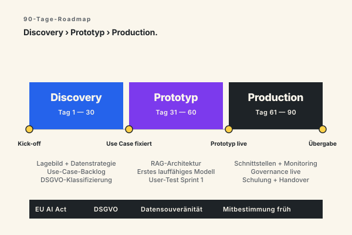
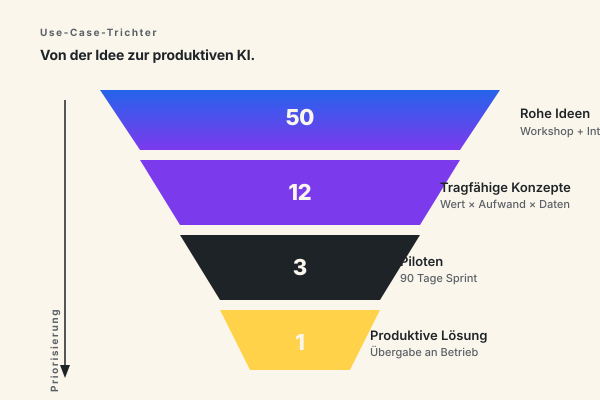
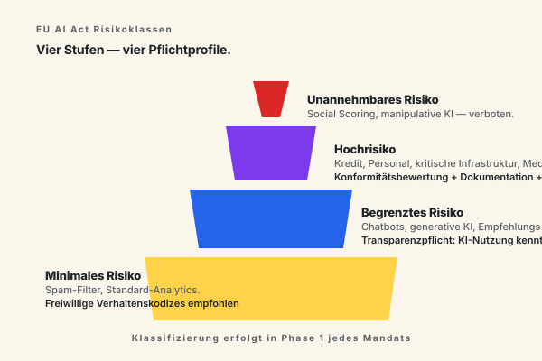

Vom Use Case › zur produktiven KI in 90 Tagen.
KI-Projekte scheitern selten an der Technik. Sie scheitern an unklaren Use Cases, fehlender Datenstruktur und einem Implementierungsablauf, der mit dem Tagesgeschäft kollidiert. CX bringt Projektmanagement-Disziplin in die KI-Einführung — DSGVO-konform, EU AI Act-ready, mit messbarem Wert ab den ersten 90 Tagen.
Die meisten KI-Initiativen kommen nie in den produktiven Betrieb.
Das liegt selten an der Technologie selbst. Modelle gibt es genug. Tools sind verfügbar. Die Engpässe sind andere — und sie sind in allen Mandaten gleich.
Use Cases bleiben theoretisch
Workshops liefern Listen mit 50 möglichen Anwendungen. Was fehlt, ist die Priorisierung nach Geschäftswert und Umsetzbarkeit. Ohne sie versandet die Roadmap.
Daten sind nicht KI-ready
Bevor ein Modell trainiert werden kann, müssen Datenquellen verbunden, bereinigt und governance-fähig gemacht werden. Dieser Schritt wird systematisch unterschätzt.
Organisation nicht vorbereitet
Ein KI-Pilot ohne Change-Management, ohne Rollen und ohne Schulung erreicht nie den produktiven Betrieb. Die Lösung lebt nur, wenn Menschen sie tragen.
Compliance kommt zu spät
DSGVO und EU AI Act werden am Ende geprüft — und kippen dann häufig die ganze Lösung. Wir designen Compliance ab Phase 1 in die Architektur.
Vier Leistungsfelder, aus einer Hand geliefert.
Strategie, Implementierung, Generative KI und Governance. Keine Übergaben zwischen Beratungs- und Umsetzungspartner — alle Phasen kommen aus dem gleichen Team.
KI-Strategie & Use-Case-Priorisierung
Strukturierte Erhebung Ihrer Prozesse. Identifikation der 3–5 Use Cases mit dem höchsten Verhältnis aus Geschäftswert und Umsetzbarkeit. Output: priorisierte Roadmap mit konkretem Business Case je Use Case — nicht ein 80-seitiges Strategiepapier.
KI-Implementierung & Integration
Vom Pilot zum produktiven Betrieb. Etablierte Plattformen (Microsoft 365 Copilot, Azure OpenAI, AWS Bedrock) oder individuell aufgebaute Lösungen — inklusive Datenintegration, Schnittstellen, Sicherheit, Monitoring.
Generative KI & KI-Agenten
Sprachmodelle, Chatbots, autonome Agenten. Beratung zu Auswahl, Prompt-Engineering, Retrieval-Augmented Generation (RAG) und der Verbindung zu Ihren bestehenden Systemen. Mit klarem Blick auf Datenschutz und Halluzinations-Kontrolle.
KI-Governance & EU AI Act
Klassifizierung Ihrer KI-Anwendungen nach EU-AI-Act-Risikoklassen, Dokumentationsaufbau, Governance-Prozesse, die mit der Regulatorik wachsen. DSGVO von Anfang an mitgedacht.
Fünf Phasen mit klaren Ergebnissen. Jede einzeln nutzbar.
Sie entscheiden nach jeder Phase, ob die nächste sinnvoll ist. Kein „Wir berechnen Ihnen 12 Monate". Schrittweise Verbindlichkeit, schrittweise Wertschöpfung.
Lagebild
Datenlandschaft, bestehende Systeme, KI-Expertise im Haus, Geschäftsprozesse mit dem größten Hebel. Output: 15–20-seitiges Lagebild, fokussiert auf Potenziale.
Use-Case-Priorisierung
Aus 10–20 Anwendungen werden 3 freigegebene Use Cases — bewertet nach Geschäftswert, Datenverfügbarkeit, Aufwand, Regulatorik.
Pilot
Erster Use Case geht produktiv. Klein, lauffähig, mit messbarem Ergebnis. Kein PoC ohne Konsequenz — sondern ein System, das echte Entscheidungen unterstützt.
Skalierung
Aus dem Pilot wird ein wiederholbarer Liefermechanismus. Weitere Use Cases, Daten- und Modell-Plattform, etablierte Governance.
Operative Übergabe
Die Lösung läuft in Ihrer Organisation. Übergabe an Ihre Teams mit Schulung und Dokumentation. Optional bleiben wir als Sparringspartner.

Wie führt man KI im Unternehmen ein?
Eine KI-Einführung im Mittelstand folgt vier Bausteinen. Erstens. KI-Strategie. Sie klärt. Wo soll KI in zwei Jahren stehen. Welche Geschäftsergebnisse soll sie tragen. Zweitens. Use-Case-Identifikation. Strukturierte Erhebung von 30 bis 50 Kandidaten. Bewertung nach Geschäftswert. Datenverfügbarkeit. Aufwand. Regulatorik. Drittens. Datenstrategie. Welche Quellen werden angebunden. Welche Datenqualität ist nötig. Welche Pipeline trägt produktiv. Viertens. Governance. Rollen. Prozesse. Reviews. Damit die Lösung im Betrieb tragfähig bleibt.
Wir empfehlen mit einem einzigen Use Case zu starten. Nicht mit dreien parallel. Das ist die häufigste Ursache für gestoppte KI-Programme. Zu viele Baustellen. Zu wenig Tiefe. Ein erster produktiver Use Case schafft die Referenz. Den Lerneffekt. Das Vertrauen. Dann kommt die zweite Welle.
Datenstrategie ist die unsichtbare Hälfte
Generative KI und LLMs lassen vergessen. Dass die Modell-Qualität nur so gut ist wie die Daten. Die ihr im Retrieval-Augmented-Generation-Setup zur Verfügung stehen. Wir investieren in jedem Mandat einen relevanten Teil der Discovery-Phase in die Datenstrategie. Welche Quellen. Welche Aktualität. Welche Berechtigung. Welcher Bereinigungsbedarf. Erst dann beginnen wir mit dem Prototyp.
KI ist abstrakt. Use Cases sind es nicht.
Eine Auswahl der Anwendungsfelder, in denen wir aktuell beraten. Wir wählen den Use Case nicht für Sie aus — wir bringen die Erfahrung mit, schneller zu erkennen, welcher in Ihrem Kontext der richtige erste Schritt ist.
Automatisierte Dokumentenverarbeitung
Rechnungen, Verträge, Lieferscheine mit KI auslesen, klassifizieren, ins ERP überführen. Typische Einsparung: 60–80 % der manuellen Bearbeitungszeit.
Kunden-Service-Agenten
KI-Erstantwort auf 24/7-Anfragen, Anbindung an interne Wissensdatenbanken, Übergabe an Mitarbeiter bei komplexen Fällen.
Vorhersage-Modelle Produktion & Logistik
Bedarfsprognosen, Wartungsplanung, Lieferketten-Optimierung auf Basis historischer und Echtzeit-Daten.
Unternehmens-GPT auf eigenen Daten
Sichere, interne Sprachmodell-Anwendung auf Ihrem Wissensbestand — nicht über externe APIs.
KI-gestützte Prozessoptimierung
Automatische Erkennung von Engpässen und Ausnahmen in Standardprozessen (Bestellung, Genehmigung, Eskalation).
Vertriebs- & Marketing-KI
Lead-Scoring, Content-Personalisierung, Forecasting auf CRM-Daten.
Compliance- & Audit-Assistenten
Automatisierte Prüfung von Verträgen, Richtlinien, regulatorischen Vorgaben.
Interne Wissens-Suche
Semantische Suche über alle internen Dokumente, Wikis, Tickets — mit kontextueller Antwort.

Was macht ein KI-Berater eigentlich?
Ein KI-Berater übernimmt drei Aufgaben. Erstens. Use-Case-Identifikation. Das heißt. Aus dem Tagesgeschäft die Prozesse herausarbeiten. In denen KI tatsächlich Wert schafft. Nicht jeder Engpass ist ein KI-Engpass. Viele lassen sich mit Prozessoptimierung oder klassischer Automatisierung billiger lösen. Zweitens. Architektur-Entscheidung. Welches Modell. Welche Plattform. Welche Datenquellen. Welches Compliance-Profil. Drittens. Implementierungs-Begleitung. Vom Prototyp zur produktiven Anwendung.
Die typische Falle. Berater die nur Phase 1 liefern. Strategiepapier. Workshop. PowerPoint. Dann Übergabe an einen anderen Partner. Dabei verliert das Vorhaben Tempo und Klarheit. CX bleibt von der ersten Stunde bis zum produktiven Betrieb am Mandat. Das ist der Unterschied.
Welche KI-Use-Cases gibt es im Mittelstand?
Im deutschen Mittelstand tauchen drei Use-Case-Familien immer wieder auf. Automatisierte Dokumentenverarbeitung. Wissens-Suche auf eigenen Daten. Vertriebs- und Marketing-Unterstützung. Daneben branchenspezifische Fälle.
- Dokumenten-Extraktion mit Large Language Models und Retrieval-Augmented Generation. Rechnungen. Verträge. Lieferscheine. Direkt ins ERP.
- Unternehmens-GPT auf eigenem Wissensbestand. Sicher. Intern. Ohne dass Trainingsdaten an OpenAI oder Anthropic abfließen.
- Generative KI im Vertrieb. Angebotsentwürfe. Personalisierte Kundenansprache. Forecasts auf CRM-Daten.
- Predictive Maintenance in der Fertigung. Bedarfsprognosen in der Logistik.
Wo der Hebel am größten ist.
KI-Anwendungen unterscheiden sich erheblich nach Branche. Was im produzierenden Mittelstand funktioniert, ist im Finanzwesen häufig regulatorisch nicht zulässig. Eine Auswahl der Branchen, in denen wir wiederkehrend KI-Vorhaben begleiten.
Produzierende Industrie & Maschinenbau
Predictive Maintenance auf Sensordaten, KI-Qualitätsprüfung mit Bilderkennung, Optimierung von Produktionsplänen. Typische Wirkung: 15–30 % Wartungskosten weniger, 5–10 % OEE-Steigerung im ersten Jahr.
Logistik & Supply Chain
Bedarfsprognosen über Standorte und Saisons, Routenoptimierung in Echtzeit, KI-gestützte Schadensbearbeitung. Die Datenintegration zwischen ERP, WMS und externen Quellen ist hier die größte Hürde — und unser Schwerpunkt.
Finanzdienstleister
Betrugserkennung, automatisierte Kreditprüfung, KYC-Beschleunigung, Compliance-Assistenten. EU AI Act-Klassifizierung ist hier kritisch: Kreditentscheidungen fallen in Hochrisiko mit voller Dokumentationspflicht.
Öffentlicher Sektor & Verwaltung
Bürgerdialog-Assistenten, Antrags-Triage, automatisierte Bearbeitung von Standardvorgängen. Datenschutz und Transparenz sind nicht-verhandelbar. Wir arbeiten ausschließlich mit europäischen Cloud-Anbietern oder On-Premise.
Gesundheit & Medizintechnik
Diagnostik-Unterstützung, Verwaltungsautomatisierung in Kliniken, Compliance-Assistenten für die Medizinprodukte-Verordnung (MDR). KI braucht hier Erklärbarkeit — Black-Box-Lösungen sind regulatorisch nicht tragfähig.
Mittelstand übergreifend
Drei Use-Case-Familien immer wieder: automatisierte Dokumentenverarbeitung, Wissens-Suche auf eigenen Daten, Vertriebs-Unterstützung. Wenn Sie nicht wissen, wo zu starten — hier ist die Antwort fast immer.
Es gibt viele KI-Beratungen in Deutschland. CX ist anders aufgestellt.
Projektmanagement-Hintergrund
Wir verstehen KI nicht als technologische Spielerei, sondern als Vorhaben mit Auftrag, Budget, Verantwortlichen und Liefertermin. Genau diese Denkhaltung fehlt in vielen KI-Projekten.
Vom Use Case zur Umsetzung — ohne Bruch
Wir berate nicht in der einen Phase und übergeben dann an einen Implementierungspartner. Lagebild, Priorisierung, Pilot und Skalierung kommen aus einer Hand.
Compliance ab Tag 1
DSGVO und EU AI Act sind keine Checkliste am Ende, sondern Teil der Lösungsarchitektur ab Phase 1. Wir kennen die Anforderungen und designen so, dass sie tragen.
Realistische Zeitlinien
Wir versprechen keinen produktiven KI-Einsatz in vier Wochen. Wir liefern einen messbaren ersten Use Case in 90 Tagen — langsamer als die Slides der Wettbewerber, aber schneller als die Realität.
Sparringspartner statt Modellbauer
Häufig ist die richtige Antwort, vorhandene Plattformen einzusetzen — schneller, günstiger, wartbarer. Wir beraten ohne Eigeninteresse an einer bestimmten Technologie.
Anbieterunabhängig
Microsoft Azure OpenAI, AWS Bedrock, Google Vertex, Open-Source-Modelle (Llama, Mistral, DeepSeek). Wir wählen nach Anforderung — nicht nach Partnerschaft.
Drei regulatorische Ebenen — von Anfang an mitgedacht.
KI-Lösungen für deutsche Unternehmen müssen DSGVO, EU AI Act und branchenspezifische Regulatorik gleichzeitig erfüllen. Wir designen so, dass sie tragen — nicht so, dass sie hinterher angepasst werden müssen.
DSGVO
Bei jeder Verarbeitung personenbezogener Daten Standard. Im KI-Kontext schnell komplex — Trainingsdaten, Modell-Outputs, Auftragsverarbeitung müssen sauber geregelt sein.
EU AI Act
Seit 2024 in Kraft, mit gestaffelten Übergangsfristen. KI-Anwendungen werden risikobasiert klassifiziert. Hochrisiko-Anwendungen brauchen Dokumentation, Conformity-Assessment, Marktbeobachtung.
Branchenspezifisch
BaFin (Finanzen), MDR (Medizin), TKG (Telekommunikation) — fügen weitere Anforderungen hinzu. Wir kennen die Schnittstellen und arbeiten mit europäischen Cloud-Anbietern oder On-Premise.

EU AI Act in der Praxis
Der EU AI Act ist seit 2024 in Kraft. Die wichtigsten Pflichten für unternehmensinterne KI greifen gestaffelt bis 2026 und 2027. Für die meisten Mittelstands-Anwendungen — Chatbots. Wissens-Suche. Dokumenten-Extraktion — gilt die Stufe "begrenztes Risiko". Pflicht ist hier vor allem die Transparenz. KI-Nutzung muss für Nutzer erkennbar sein. Generative Ausgaben müssen als KI-erzeugt kenntlich gemacht werden.
Anders sieht es bei Hochrisiko-Anwendungen aus. Kreditentscheidung. Personalauswahl. Medizinische Diagnostik. Kritische Infrastruktur. Hier kommen Konformitätsbewertung. Risiko-Management-System. Datenqualitäts-Anforderungen. Menschliche Aufsicht. Logging und Marktbeobachtung dazu. Wir prüfen die Einstufung in Phase 1 — bevor Architektur-Entscheidungen fallen die später teuer rückgängig zu machen sind.
Datensouveränität ohne Innovationsbremse
Viele Mittelständler haben Sorge dass DSGVO und EU AI Act KI faktisch unmöglich machen. Das stimmt nicht. Es gibt heute mehrere praktikable Wege. Open-Source-LLMs (Llama. Mistral. DeepSeek) auf europäischer Infrastruktur. Azure OpenAI mit EU-Datenresidenz und Customer-Managed-Keys. AWS Bedrock in Frankfurt. Sogar On-Premise mit GPU-Hosting für hochsensible Branchen wie Verteidigung und Gesundheitswesen. Wir wählen den Pfad gemeinsam mit Ihrer IT.
Generative KI, klassisches Machine Learning, RAG — wann was?
Künstliche Intelligenz ist kein einheitliches Werkzeug. In jedem Mandat treffen wir mindestens drei Architektur-Entscheidungen. Welches Modell-Paradigma. Welches konkrete Modell. Welche Datenanbindung.
Generative KI auf Basis großer Sprachmodelle — ChatGPT (OpenAI). Claude (Anthropic). Gemini (Google). Llama (Meta). Mistral. DeepSeek. Diese Modelle eignen sich für Aufgaben mit unstrukturiertem Text. Konversation. Dokumenten-Verstehen. Code-Generierung. Sie sind nicht die richtige Antwort wenn deterministische Genauigkeit gefragt ist.
Klassisches Machine Learning bleibt erste Wahl für strukturierte Vorhersage-Probleme. Bedarfsprognosen. Betrugserkennung. Anomalie-Detection in Sensordaten. Hier liefern Gradient Boosting. Random Forests. Neuronale Netze nach wie vor präzisere und nachvollziehbarere Ergebnisse als ein Large Language Model.
Retrieval-Augmented Generation (RAG) verbindet beide Welten. Ein Sprachmodell beantwortet Fragen. Aber zieht den Kontext aus Ihrer eigenen Wissensbasis. Das ist die Standard-Architektur für ein Unternehmens-GPT auf eigenen Daten. RAG löst das Halluzinationsproblem nicht vollständig — aber es macht die Antworten überprüfbar und zitierfähig.
Datenstrategie. Datensouveränität. DSGVO.
Eine tragfähige KI-Strategie steht und fällt mit der Datenstrategie. In jedem Mandat klären wir vier Fragen früh. Welche Datenquellen werden benötigt. Welche Datenqualität liegt vor. Welche Berechtigungs- und DSGVO-Themen sind zu lösen. Welche Pipeline trägt die Daten produktiv ins Modell. Ohne diese Klärung wird jedes Prototyp-Erlebnis zur Sackgasse.
Datensouveränität ist im deutschen Mittelstand ein dominantes Thema. Wir arbeiten ausschließlich mit europäischen Cloud-Regionen oder On-Premise-Infrastruktur. Customer-Managed Keys. Audit-Logs. Klare Auftragsverarbeitungs-Verträge. Bei besonders sensiblen Branchen — Gesundheit. Finanz. Verteidigung — bauen wir die Lösung lokal auf GPU-Servern auf statt auf Hyperscalern.
Compliance ist nicht das Gegenteil von Geschwindigkeit. Compliance früh gedacht ist die Voraussetzung für eine schnelle KI-Einführung. Die langsamsten Projekte sind die. In denen DSGVO und EU AI Act am Ende auftauchen und die ganze Architektur kippen.
Über diese Methodik
Verfasst von Hannes Schäfer, Geschäftsführer CX-Experts. Hannes hat über 15 Jahre Erfahrung in Transformations- und KI-Projekten — zuletzt als Senior Consultant in einer DAX-Beratung, davor Programm-Leitung in der produzierenden Industrie. Die hier beschriebene 90-Tage-Methodik basiert auf über 40 Mandaten im deutschen Mittelstand und in DAX-Konzernen.
Antworten auf die Fragen, die in den ersten Gesprächen immer kommen.
Wie viel kostet eine KI-Beratung?
Wie lange dauert es bis zum ersten produktiven KI-Einsatz?
Wir haben schon einen KI-Piloten, der nicht in Produktion kommt. Hilft das?
Brauchen wir interne KI-Experten?
Welche KI-Technologien setzt CX ein?
Wie ist das mit dem EU AI Act?
Können Sie auch nur einen Workshop oder ein Strategiepapier liefern?
Was ist der Unterschied zwischen KI-Beratung und KI-Implementierung?
Arbeiten Sie auch mit kleinen Unternehmen?
Was passiert nach der Übergabe?
Was macht ein KI-Berater?
Welche KI-Use-Cases gibt es im Mittelstand?
Wie führt man KI im Unternehmen ein?
Was unterscheidet generative KI von klassischer KI?
KI-Beratung › starten.
Der erste Schritt ist ein Erstgespräch von 30–45 Minuten. Wir klären Ihren Ausgangspunkt, die wichtigsten Engpässe und ob CX der richtige Partner ist. Wenn nicht, verweisen wir auf jemanden, der besser passt.
Erstgespräch anfragen →